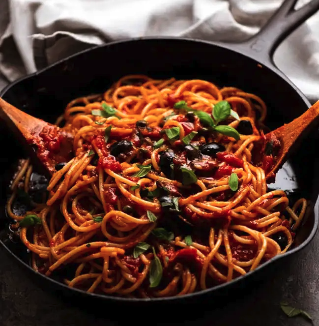

Pasta Recipe

Description
Spaghetti alla puttanesca is an Italian pasta dish invented in Naples in the mid-20th century and made typically with tomatoes, olive oil, olives, anchovies, chili peppers, capers, and garlic—with vermicelli or spaghetti pasta.
Ingredients
- Pasta
- Sunrise tomatoes
- Black olives
- Capers
- Anchovy
- Butter
Steps
- Cook pasta to al dente
- Chop up black olives, capers and anchovy
- In a large pan, add butter, black olives, capers and anchovy, cook it for a few minutes until you smell the aroma
- add pasta and little bit of pasta water